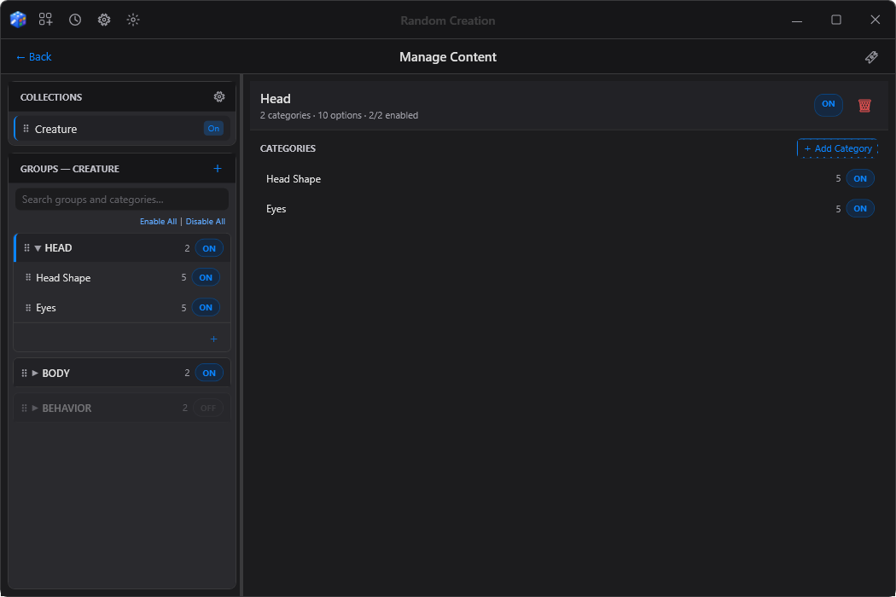
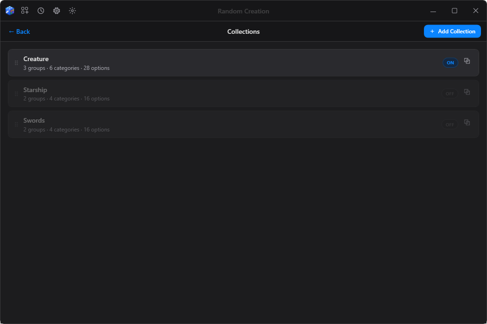
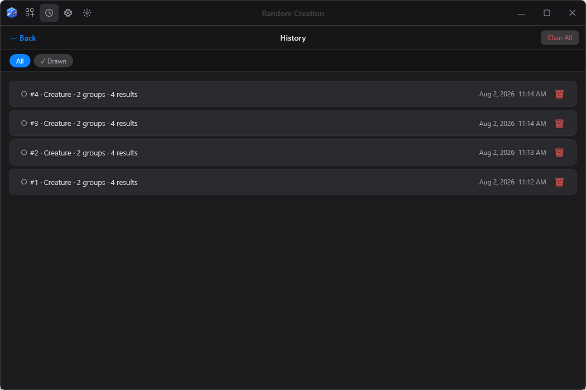
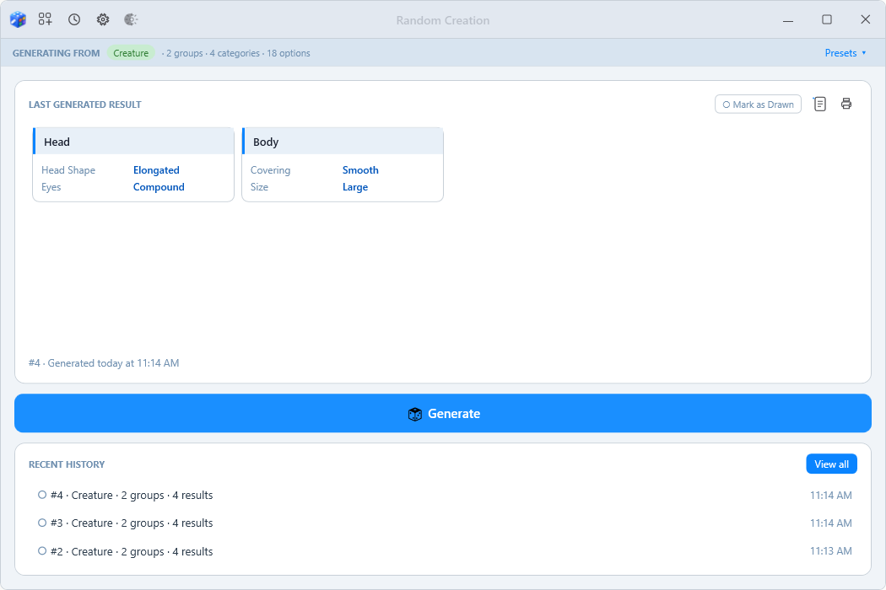

How it works
You do not need any special knowledge. There are three steps.
-
1
Write down the parts
Say what your thing is made of. A creature might have a Head Shape, Eyes, a Covering and a Size.
-
2
Give each part some choices
Head Shape could be Round, Elongated, Flat, Skull-like or Beak-fronted. Add as many as you like.
-
3
Press Generate
The app picks one choice for every part and shows you the result. Press it again for a completely different one.
Nothing in the app is about creatures. It has no built-in subject at all. The same app works for monsters, spaceships, loot tables, characters, recipes, writing prompts, or anything else you can break into parts. It comes with a small sample so you can see how it fits together before you make your own.
What you get
-
Your content, your way
Organise things as deeply or as loosely as you like: collections, groups within them, and the parts within those.
-
Switch things off without deleting them
Turn any collection, group, or part on or off to narrow a result. Nothing is lost.
-
Common and rare
Give a choice more or less weight so some results turn up often and others are a surprise.
-
Presets
Save a whole on/off setup under a name and switch between setups in one click.
-
History
Every result is kept with a number and a time, and you can mark the ones you have already used.
-
Print it
Get results onto paper, with a preview that shows exactly what will print.
-
Dark, light, or match Windows
Three themes and three text sizes, so it is comfortable on any screen.
-
Undo
Changed your mind? Undo edits to your content, one step at a time.
A look around




Installing
The normal way
- Press the Download for Windows button at the top of this page.
- Open the file that downloads. It ends in
-setup.exe. - Follow the short installer. It does not ask for an administrator password.
- Random Creation appears in your Start menu.
Everything you make is kept in your own Windows user folder, so updating or removing the app never touches it.
The portable way
- Use the portable version link instead.
- Unzip the folder anywhere you like: your Documents, a USB stick, anywhere.
- Open
RandomCreation.exeinside it.
Your content lives in a data folder beside the app. Copy that folder and your whole setup comes with it.
If Windows shows a blue “Windows protected your PC” screen
This is normal for a small app from an independent developer. Windows shows it for any program that has not been through a paid signing process, not because it has found anything wrong.
- On the blue screen, click the small More info link.
- A Run anyway button appears. Click it.
You only see this once.
Common questions
- Is it free?
- Yes. It is a personal creative tool, shared with people who might enjoy it.
- Does it work on a Mac or a phone?
- No, Windows only. Windows 10 and 11 both work.
- Do I need to install anything else first?
- No. Everything the app needs is included.
- Does it connect to the internet or collect anything?
- No. It runs entirely on your own computer and never sends anything anywhere.
- Where is my content, if I want to back it up?
- In the app, open Settings and press Open data folder. Copy that folder somewhere safe and you have a complete backup.
- I found a problem, or have an idea.
- Bug reports and suggestions are welcome on the project's issue page.